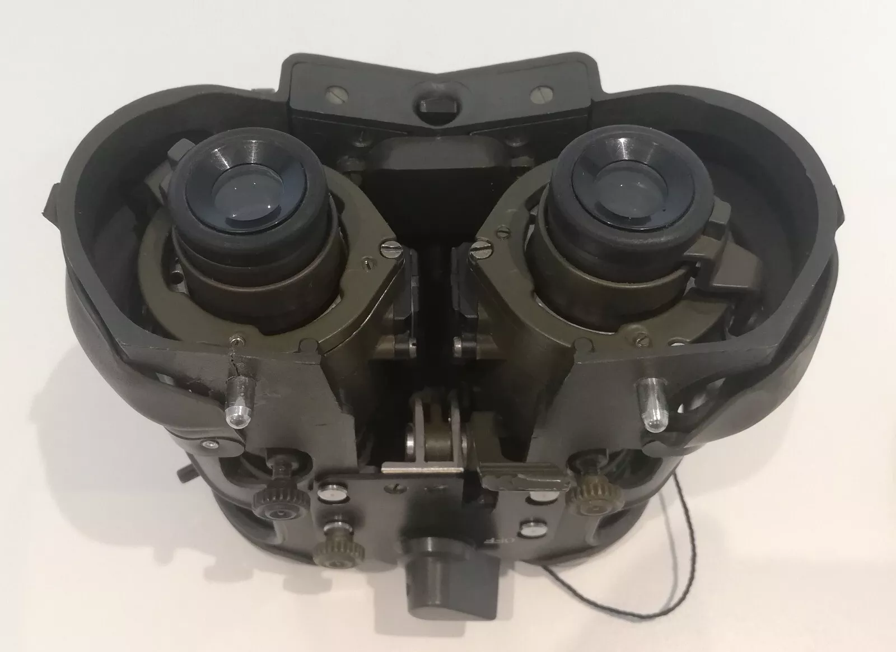

Fero D51
Germany's answer to the PVS-5.
Everything is bolted inside a plastic shell which you strap to your face, just like the PVS-5A. No one had thought of something better yet. Unlike the PVS5, this one takes AA batteries right out of the box!
The eye relief and eyebox is quite poor, although the optics do allow for an FOV of 48 degrees, exceeding that of modern units. The objective lenses are fast by even modern standards. Demist shields can be fitted to the eyepieces, a feature missing on the PVS5.
Perhaps the most interesting feature of the D51 is the linked objective lenses. Each of them are connected by a toothed belt, so that when one is adjusted, the other is also moved by the same amount. This eliminates the need to focus each lens individually when refocusing the device.
They can easily be adapted for modern dovetail mounts using a 3d printed part which slips over the battery door.

The D51 uses a pair of XX1411 second generation image intensifier tubes. They are 43mm diameter, inverting, with fibre input and output and plate contacts. They are nearly identical to the MX9916 used in the PVS5, and can be used in both.